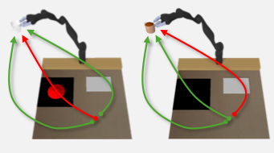
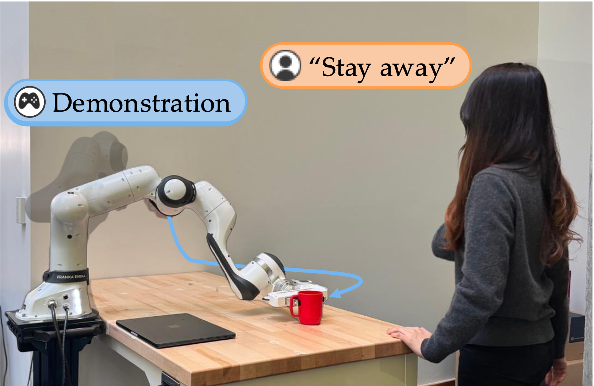
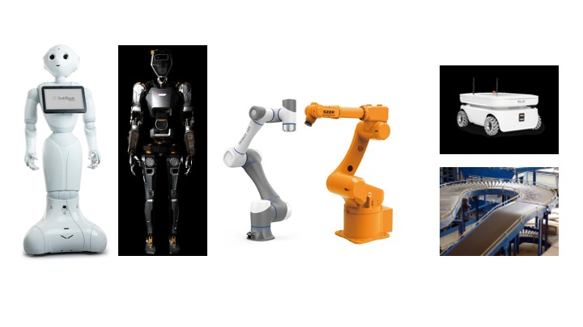
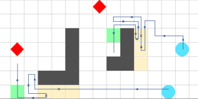
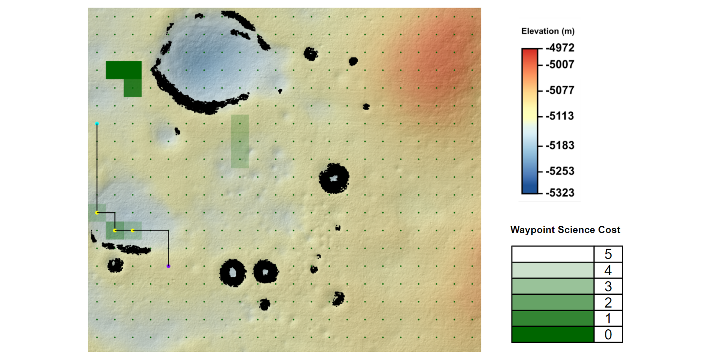
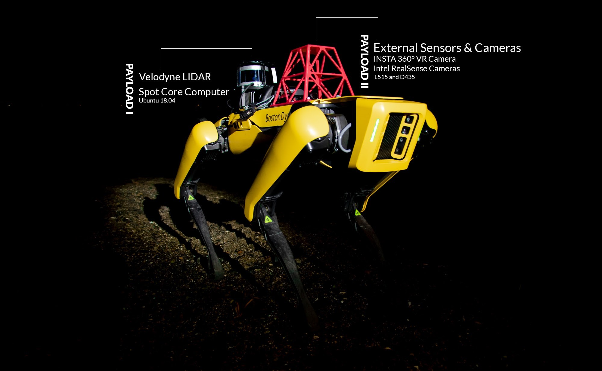

PhD Student · MIT AeroAstro & CSAIL
aforsey [at] mit [dot] edu
I'm a PhD student at MIT in the AeroAstro department and CSAIL, where I work with Julie Shah in the Interactive Robotics Group. I also collaborate closely with Andreea Bobu in the CLEAR Lab. My research focuses on robot learning from human input, specifically developing algorithms for efficient behavior adaptation and transfer across tasks. I’m excited about building systems that real users can easily work with outside the lab.
My work has been supported by the Hugh Hampton Young Fellowship at MIT and the National Defense Science and Engineering Graduate (NDSEG) Fellowship. I earned my SB and SM in Aerospace Engineering also from MIT.

Learning Contextually-Adaptive Rewards via Calibrated Features
IEEE/ACM International Conference on Human-Robot Interaction (HRI), 2026
[paper] []

Masked IRL: LLM-Guided Reward Disambiguation from Demonstrations and Language
International Conference on Robotics and Automation (ICRA), 2026
[paper] []

Automation from the Worker's Perspective
arXiv, 2024
[paper] []

Centralized Multi-agent Synthesis with Spatial Constraints via Mixed-Integer Quadratic Programming
NASA Formal Methods (NFM), 2023
[paper] []

Situational Cues for Continuous Trust Calibration in Automated Systems
International Conference on Environmental Systems (ICES), 2022
[paper] []

Assessment of Depth Data Acquisition Methods for Virtual Reality Mission Operations Support Tools
IEEE Aerospace Conference (AERO), 2022
[paper] []